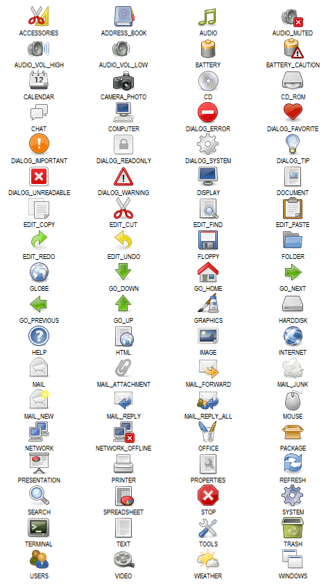

ICONS32
ICONS32 is a static object containing a collection of sprite constants. Each sprite constant represents a 32x32 icon. These sprites can be used anywhere the IID_SPRITEINFO type is accepted, for example:var list = new RasterList( "listDiv", "grid" ); list.add( null, ICONS32.GRAPHICS, null, "Customize" ); list.add( null, ICONS32.ADDRESS_BOOK, null, "Addresses" ); list.add( null, ICONS32.AUDIO_VOL_HIGH, null, "Sounds" ); list.add( null, ICONS32.ACCESSORIES, null, "Accessories" ); ...
LICENSE
The ICONS32 sprite is based in a subset of the Tango Base Icon Library v0.8.90 by the Tango Desktop Project (http://tango.freedesktop.org). The Tango Base Icon Library is released to the Public Domain. The authors ask that you please attribute the Tango Desktop Project in the credits or documentation for the software that use these icons.ICONS32 Constants
